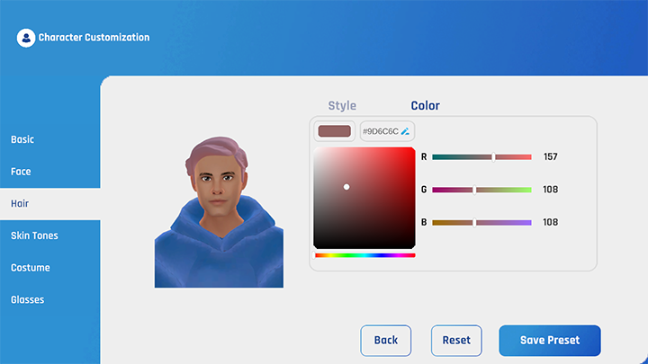
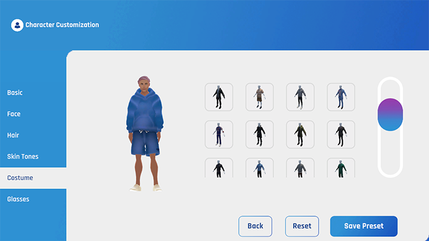
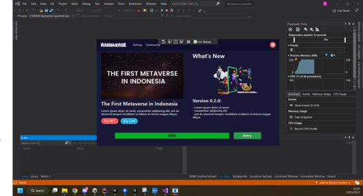
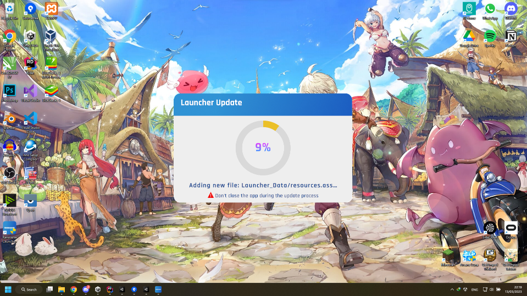
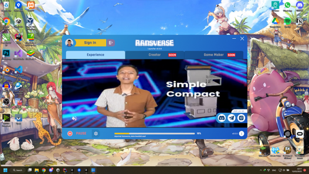
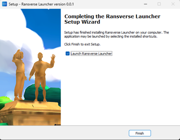

Unity Developer | Multiplayer | AR & VR
Ransverse is an open-world NFT-based game developed by RANS Entertainment in collaboration with Shinta VR as the development partner. As the lead programmer on this project, I was responsible for creating the core systems that drive the game. In addition to programming, I guided my team in building and optimizing various features to ensure a smooth and engaging experience for players. The game is available across desktop, mobile, and VR platforms, allowing users to access the world of Ransverse on multiple devices.
One of the unique features of Ransverse is the integration of crypto wallet authentication via MetaMask, enabling users to connect their wallet and interact with the game seamlessly. The development is divided into two main components: the Experience and the Launcher. The Experience is the main application where the open-world gameplay unfolds, while the Launcher is a separate application for checking and updating the desktop version of the Experience.
This feature allows players to customize their avatars, In Ransverse, players can personalize various aspects of their avatar, including gender, head shape, skin tone, hairstyle, hair color, clothing, and accessories.
 Since Ransverse is an open-world game, efficient memory management is crucial for performance. To optimize the game, I implemented an additive scene loading system. This system only loads the scene where the player is currently located and the surrounding areas in their line of sight. By loading only necessary assets, we reduce memory usage and ensure smoother gameplay.
The Launcher for the desktop version includes a built-in updater, allowing users to patch the game without having to download the entire application again. Initially, I developed the launcher using .NET and WPF for the GUI, but I later rebuilt it in Unity for increased flexibility.
Unity posed a challenge in creating a window without borders, which is a native feature in .NET. To achieve this in Unity, I used a Windows API library to manipulate the window borders, essentially creating a full-screen application with a transparent background. The updater system allows users to download only patches rather than reinstalling the entire game, making the update process more efficient.
 To enhance the professionalism of the desktop version, I created an installer using Inno Setup. Instead of downloading a *.zip file, users can now install Ransverse with a customized *.exe file, making the installation process smoother and more user-friendly. I configured the installer to automatically request administrative privileges if the application is installed on the C drive, which prevents issues with the updater being blocked by administrator permissions. This approach provides a streamlined installation experience, improving the game's accessibility and user experience.
